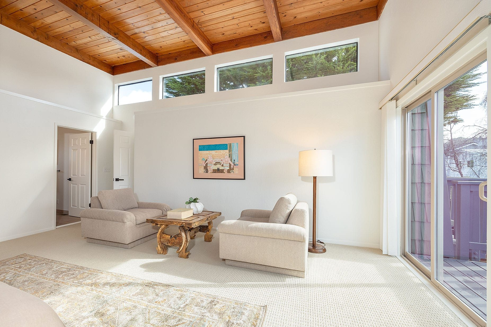
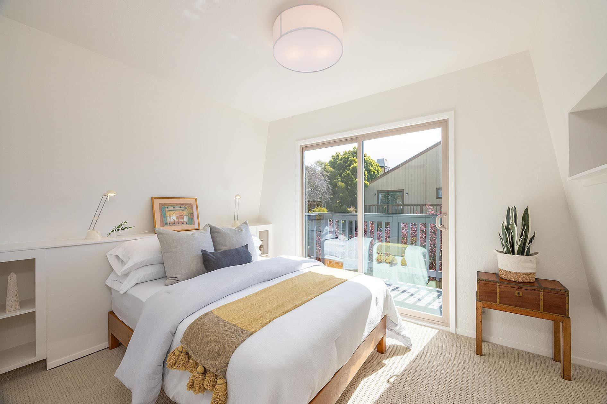

01
Half Moon Bay, California
Every Half Moon Bay listing on MLSListings, and what Stephanie knows about the town where she raised her family.
Living Here
Half Moon Bay was San Mateo County's first town, and it is still the heart of the Coastside: a historic Main Street, four miles of state beach and a trail along the bluffs.
It began in the 1840s as San Benito, grew up as Spanishtown and took the name Half Moon Bay in 1874. The neighborhoods built after the war filled in the town, and it became a city in 1959. Mornings are often foggy and afternoons clear, and September is usually the warmest month. Highway 92 crosses the hills to San Mateo and I-280, and Highway 1 runs the length of the coast.
Saved Searches
Each card opens a live search of MLSListings listings, updated as they change.
01

02
03

04
<!-- IDX_ZONE: homes-for-sale-half-moon-bay-ca-feed -->
The newest Half Moon Bay listings in one compact row, six to eight homes. Builder places an IDX Broker widget here (a showcase or carousel of the town's newest-first saved link).
Downtown, the streets around Main Street mix historic houses with cottages and newer homes, a short walk from the shops, the restaurants and the library. Around it are neighborhoods of single-family homes on their own lots, most of them built after the war.
South of downtown, Ocean Colony wraps the golf links. To the north, the city runs up the coast through Frenchmans Creek and Miramar toward Pillar Point Harbor. Past the edges are farms, nurseries and larger rural parcels along Highways 1 and 92.
Most homes for sale here are single-family houses, with fewer condos and townhomes. Ocean views, bluff-top lots and acreage each draw their own buyers, and Stephanie can tell you which streets have which.
Ocean Colony is a gated neighborhood south of downtown, built around the Half Moon Bay Golf Links. Its two courses are the Old Course, designed by Arnold Palmer and finishing on an ocean bluff, and the Ocean Course, a links course along the cliffs, with The Ritz-Carlton next door.
Homes range from townhomes to large single-family houses, many of them on the fairways. The neighborhood has its own association, rules and dues, so read the documents before you write an offer.
At the north end of the bay, Miramar's streets run down to the beach and the Coastside Trail. Just past it, Princeton sits beside Pillar Point Harbor, where fishing boats come in and, in season, sell crab and fish straight off the dock.
Both share Half Moon Bay's 94019 ZIP code, so their listings usually read Half Moon Bay. Princeton and parts of Miramar are outside the city limits, though, which decides who reviews your permits: the city or San Mateo County. Ask before you plan a remodel.

Day to Day
School information is factual and by district. Always confirm a specific address in the district's school finder.

Stephanie in Half Moon Bay
Stephanie and her husband, Dan, raised their twin daughters in Half Moon Bay. These are a few of the homes she has sold here.
$2,950,000
100 Coronado Avenue
Half Moon Bay
Sold2 beds · 3 baths · 1,397 sq ft
$2,710,000
432 Magellan Avenue
Half Moon Bay
Sold4 beds · 3.5 baths · 4,000 sq ft
$2,610,000
425 Seymour Street
Half Moon Bay
Sold3 beds · 2.5 baths · 3,771 sq ft
“Her steady hand and deep expertise during a complex market for the sale of my home in Alsace Lorraine, Half Moon Bay was invaluable.”
Erika L. · Seller, Half Moon Bay
Questions
What you spend depends most on the home itself: its street, its view, its condition and its lot. Beyond the price, plan for property tax based on what you pay, homeowners insurance (some coastal homes need the California FAIR Plan) and association dues in neighborhoods such as Ocean Colony. For current prices, see the searches above or Stephanie's market reports.
Prices change month to month, so this page does not print them. The searches above show every home for sale right now, and the San Mateo County market report covers Half Moon Bay's recent sales. For a specific street, ask Stephanie for the comparable sales.
It depends on the day you want. Half Moon Bay State Beach runs four miles, with parking at Francis, Venice, Dunes and Roosevelt beaches; Francis Beach has the campground, and dogs are not allowed on the state beach. For a walk or a ride above the water, the Coastside Trail follows the bluffs, and for tide pools the Fitzgerald Marine Reserve is a short drive north in Moss Beach.
Cabrillo Unified School District serves Half Moon Bay and the rest of the Midcoast, including El Granada, Montara and Moss Beach. Its schools in town include Hatch Elementary, Cunha Intermediate and Half Moon Bay High School. Boundaries can change, so confirm any address with the district.
Nearby


Resources
Stand-in photographs via Wikimedia Commons: Golf course, Half Moon Bay and Half Moon Bay, San Mateo County by Carol M. Highsmith, Library of Congress (public domain); Pillar Point and Half Moon Bay by Doc Searls (CC BY-SA 2.0); Pillar Point Harbor by Sausalitoarchitect (CC BY-SA 3.0); Half Moon Bay, California by MaxAKumar (CC BY-SA 4.0).
Contact
Call Stephanie at (650) 678-5707 or send her a note. She raised her family here and will tell you what any street is like before you tour.